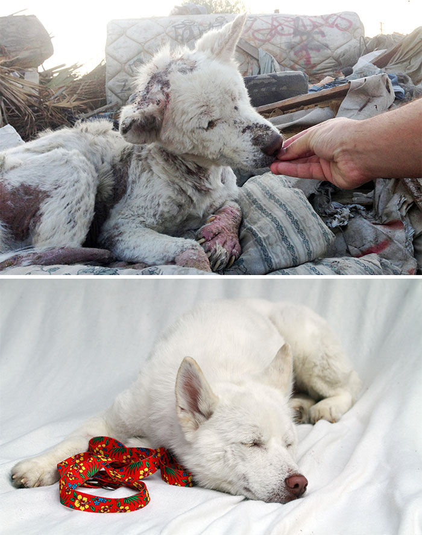
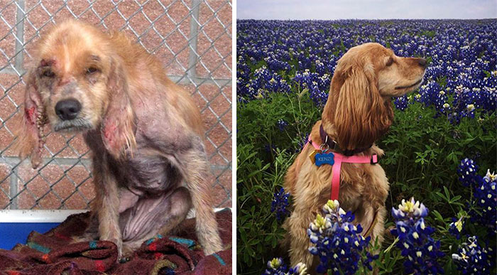
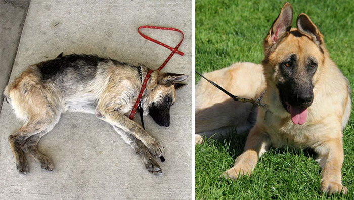
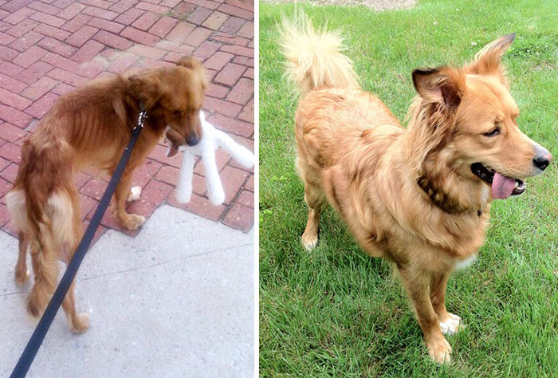

Photos proving the power of adoption and rescue
1. Miley
 Miley was found in a trash pile, and is now living a happy and healthy life with her savior, Frank.2. Kenzi
 Kenzi was a severe case of abuse/neglect, but now she is a healthy, flower-loving girl.3. Vita
 Vita was found in a junkyard, weighing only 70 pounds. With a lot of love and care, she's a new dog.4. Olivia
 Olivia on the day she was taken home from the shelter and one year later. It's amazing what a loving home can do. Images and stories provided by Julija Neje.